작업 흐름
- 입력
- 주제 하나 (물리적 원인과 결과가 있는 실제 이야기)
- 브리프
- 출처를 단 사실, 훅 → 배경 → 고조 → "You see" + 비유 → 반전 대본 200–240단어, 주제에 맞춰 새로 설계한 인물 · 세트 · 소품 · 조명 · 소리
- 목소리
- ElevenLabs 내레이션, 초당 3.4–3.7단어로 정리, 단어별 시각 words.json
- 장면
- 3D 세트, 단어에 맞춰 시작하는 샷 15–20개, 샷마다 조명 프리셋과 카메라 키
- 출력
- 1080×1920 MP4, 출처 링크를 단 업로드 설명 DESCRIPTION.md, 소리 나는 라이브 페이지, BRIEF.md
cd cartoon-3d-short/examples/leaning-tower
node ../../scripts/check.mjs index.html
node ../../scripts/render.mjs index.html --sheet 20 --scale .35
node ../../scripts/score.mjs score.js --dur 61.94 \
--voice voice/voice.mp3 --words voice/words.json
node ../../scripts/render.mjs index.html --audio out/mix.wav
node ../../scripts/new-film.mjs ~/my-short # 새 쇼츠요구 사항: Node + Playwright Chromium, ffmpeg, 내레이션용 ElevenLabs. npm 설치와 GPU는 필요 없습니다. 단계별 순서는 SKILL.md에 있습니다.
샘플
예제와 템플릿의 샷입니다. 카드를 누르면 라이브 데모가 그 장면에서 열립니다.
The Tower That a War Saved 예제 · 62초 · 19샷
피사의 사탑이 아직 서 있는 이유: 백 년 가까운 전쟁으로 공사가 멈춘 사이 진흙이 단단해졌다는 실제 이야기입니다. 출처: Wikipedia · Burland 외, Soils and Foundations 2003
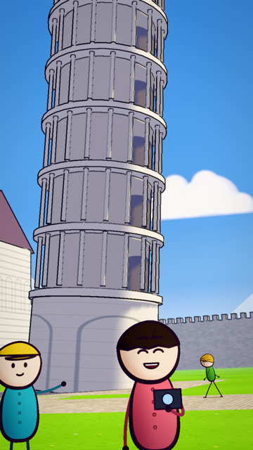
훅 · 1.5초전쟁 덕분에 서 있는 탑오늘의 탑을 먼저 보여 주는 낮은 와이드, 줌으로 다가감
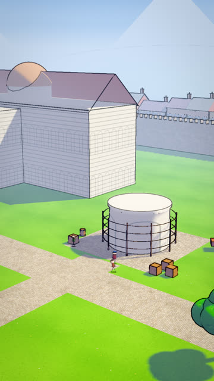
배경 · 6초1173년, 첫 층흰 플래시 뒤 높은 설정 샷에서 미끄러지듯 내려옴
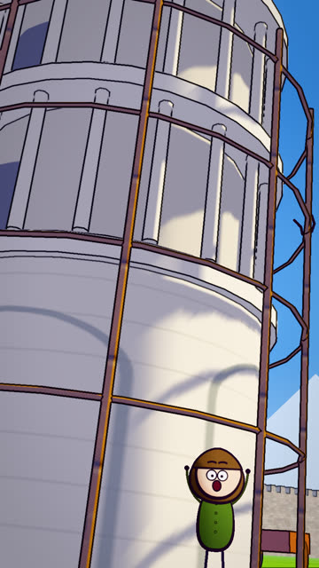
고조 · 12.8초기울기 시작한 탑0°에서 4°로 기울고 "over"에 화면이 흔들림
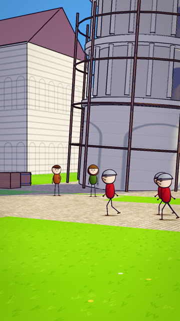
고조 · 19.5초전쟁, 연장을 내려놓다옆모습으로 행진하는 병사들, 롤을 준 카메라
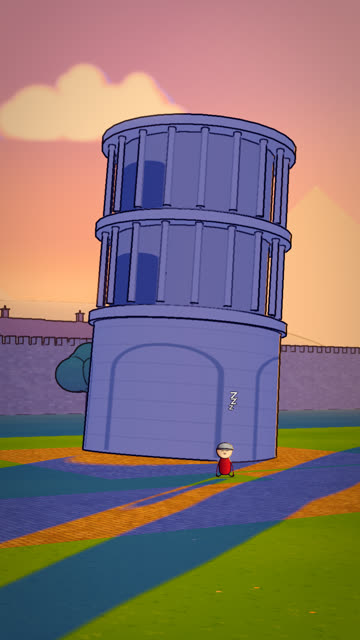
시간 경과 · 23.8초백 년 동안 그대로골든 아워 프리셋: 낮은 역광, 보랏빛 그늘, 복숭아색 지평선
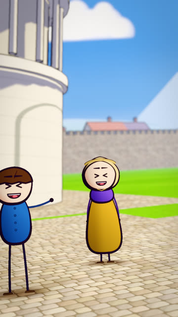
반응 · 26.6초웃는 이웃들미디엄 샷, 렌즈 블러, 단어에 맞춘 표정
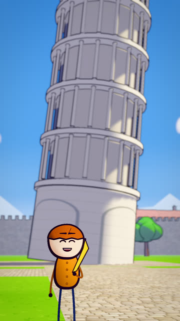
농담 · 35.4초바나나처럼 휜 탑위층을 반대로 기울여 쌓은 탑, 손에 든 소품
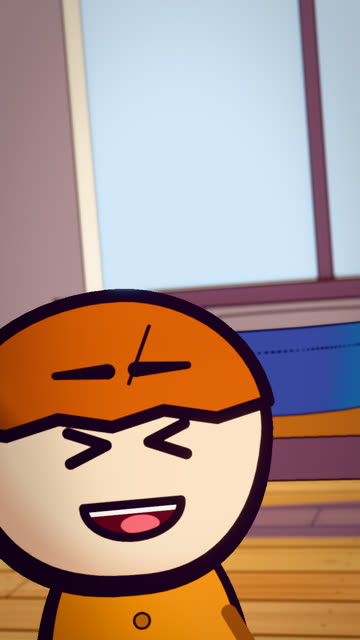
You see · 41.6초스펀지 비유다른 장소의 클로즈업, 실내 프리셋, 물 튀김 효과
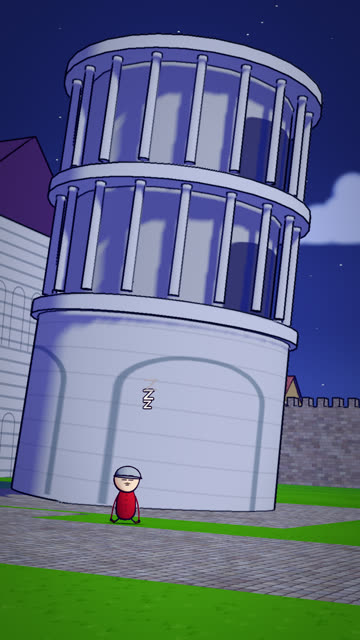
설명 · 47초기다리는 탑밤 프리셋: 푸른 키 라이트와 달
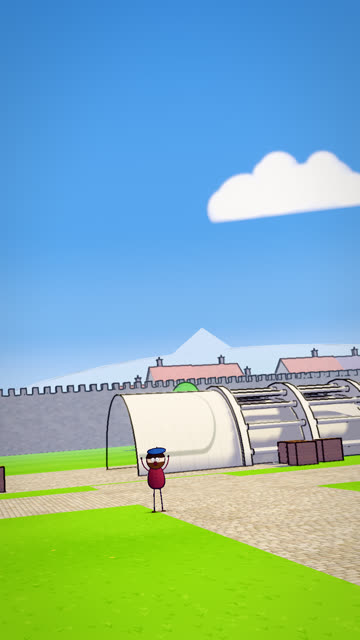
가정 · 50.8초계속 지었다면반사실을 그대로 보여 주고 충돌에 맞춰 음악을 끊음
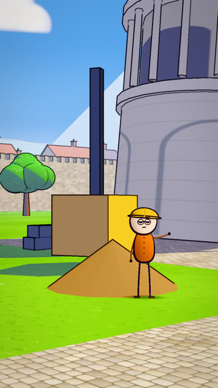
결과 · 54초1990년의 기술자들케이블, 납 추, 높은 쪽 흙을 빼내는 드릴
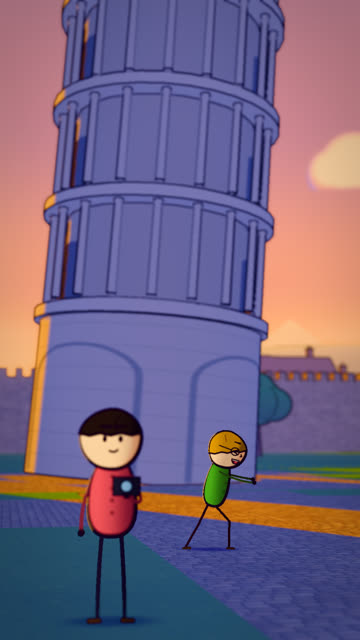
반전 · 61초똑바른 탑은 그냥 탑훅의 그림으로 돌아와 마지막 단어에서 끝남
Butter Side Down 템플릿 · 19초 · 5샷
목소리가 생기기 전에도 도는 시작용 영상입니다. 대본에서 단어 시각을 추정합니다. 출처: Matthews, European Journal of Physics 1995
실제 작품
이 스킬은 mromidev의 Claude 스킬(MIT)을 이 레포의 방식으로 옮긴 것입니다. 원본은 Remotion과 React Three Fiber로 렌더하고, 여기서는 같은 룩을 브라우저 페이지의 three.js로 냅니다.
링크
- SKILL.md 워크플로
- 폴더 lib · scripts · references · templates · examples
- README.md 빠른 시작
- references/BRIEF.md 고정되는 것과 주제마다 설계하는 것, 브리프, 스틸 검토 기준
- references/STORY.md 주제 → 대본 공식 → 샷 문법
- references/LOOK.md 측정한 룩의 수치
- references/KIT.md API
- references/VOICE.md 내레이션과 단어 타이밍
- references/LESSONS.md 겪은 문제와 해결